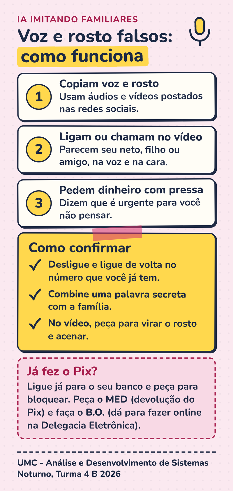

Golpistas copiam parentes em ligações e vídeos para pedir dinheiro. Veja como se proteger.
A inteligência artificial (IA) aprende como uma pessoa fala e como o rosto se mexe. Depois, cria uma voz ou um vídeo muito parecidos.
Isso se chama deepfake. Os golpistas usam para fingir que são um neto, um filho ou um amigo.
Usam áudios e vídeos postados nas redes sociais.
Parecem alguém da família, na voz e na cara.
Dizem que é urgente para você não pensar.
Pix ou transferência "para agora".
"Não conte a ninguém" é sinal de golpe.
Diz ser da família, mas você não conhece o número.
Pausas estranhas, vídeo travando, boca fora do tempo.
Em 12 meses, mais de 40 milhões de pessoas com 16 anos ou mais. Pesquisa do DataSenado, 2024.
Cerca de 1 em cada 10 brasileiros caiu em golpe por celular ou internet em um ano. Datafolha e Fórum Brasileiro de Segurança Pública, 2024.
Por aplicativo de mensagem ou ligação, em 12 meses. Datafolha e Fórum Brasileiro de Segurança Pública, 2024.
Os números são de golpes digitais em geral. Ainda não há uma pesquisa oficial só sobre golpes com voz e rosto falsos feitos por IA.
Pode ser uma ligação ou chamada de vídeo, com voz e rosto iguais aos do parente.
Não pague nada. Desligue a chamada sem pressa.
Ligue para o número que você já tem salvo no celular, não para o que chamou.
Peça a palavra que só a família sabe. Se não souber, é golpe. Confirme também com outro parente.
Desenhos para ajudar. Os menus podem ficar um pouco diferentes conforme o seu celular.
Faça boletim de ocorrência e avise o seu banco.
Bloqueie o número e denuncie a conta no aplicativo.
Em WhatsApp e redes sociais, para ninguém invadir.
As atualizações corrigem falhas de segurança.
Explique que a IA imita voz e rosto, principalmente aos mais velhos.
Escolham juntos e não contem a ninguém.
Quanto mais gente souber, menos gente cai.
